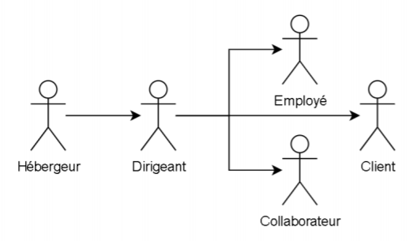

Pendant ce stage de 5 semaines, j'ai été intégré dans un projet avec 3 autres développeurs.
Ce projet avait pour objectif de permettre à l’entreprise une gestion simplifiée et pérenne de ses multiples projets
en relation avec ses clients.
Ma mission principale consistait à développer un des besoins nécessaires à la solution :
la gestion de tickets.
Le langage de programmation utilisé sur ce projet est PHP et l'architecture utilisée est un MVC.
Le projet Neptune est une solution qui s’inscrit dans un contexte d’organisation interne. Elle a pour objectif de
permettre à l’entreprise une gestion simplifiée et pérenne de ses multiples projets.
Elle ne concerne dans un premier temps que les membres de l’entreprise, mais prévoit dès sa conception que
des collaborateurs et/ou clients puissent utiliser la solution pour un suivi du ou des projets les
concernant et une remontée des besoins ou remarques.
La solution doit, à ce titre, être simple d’usage et de compréhension pour des personnes externes au cœur de métier de
l’entreprise. Elle n’est pour autant pas libre d’accès, et la création de comptes doit être limitée afin que l’entreprise
garde la main sur le partage de données.
La solution pourra utiliser des systèmes externes pour un usage et/ou une ergonomie optimale,
mais ne devra en aucun cas se reposer sur eux afin de conserver une indépendance maximale tant dans les données
que les fichiers stockés.
La solution permet une transmission d’informations sous forme écrite ou via des fichiers dont le format est libre.
Elle est capable d’héberger des données et des fichiers sans limite de nombre ou de temps, avec possibilité de
chiffrer les fichiers dits sensibles.
Afin de limiter l’accès aux données à caractère confidentiel, celles en production ne sont accessibles que
pour le ou les dirigeants, aucune exception ne doit être faite (développeurs de la solution compris).
Les clés de chiffrement des fichiers ne doivent pas être présentes sur le site, dans la base ou dans un stockage
informatique quelconque lié à la solution pour une sécurité optimale.
La solution est interne à la société et en cours de développement. Une fois déployé, il sera mis en ligne mais n’aura pas un accès tout public car réservé aux clients de la société Doowup.
Ma mission consistait à développer un des besoins nécessaires à la solution : la gestion de tickets. Un
ticket
est
un élément permettant au client connecté de faire remonter un problème technique sur un projet : une
correction, une
demande concernant un ajout conséquent, ou toute autre requête à destination de l’entreprise du dirigeant.
L'objectif de ce besoin est que les dirigeants et personnes autorisées doivent pouvoir créer, suivre,
annoter et modifier des tickets.
La solution Neptune est établie sur un modèle d'architecture MVC maison inspirée des frameworks Laravel ou
Symfony. Ce style d'architecture permet de bien organiser son code source. Il va nous aider à savoir quels
fichiers créer, mais surtout à définir leur rôle.
Le but de cette architecture est de séparer la logique du code en trois parties que l'on retrouve dans des
fichiers distincts.
Le choix de ne pas se servir d’un framework est avant tout pour un souci de légèreté mais également pour
une facilité de prise en main pour des personnes extérieures.
En revanche, il est parfois nécessaire de recréer des éléments déjà présents sur les frameworks tels que
les routeurs ou modèles.
Cette solution comporte 5 acteurs différents représenté sous une hierarchie bien définie :
Voici les fonctionnalitées que peux effectuer un utilisateur (client ou administrateur) concernant les pages suivantes :


Voici les divers outils que j'ai utilisé tout au long de mon stage :